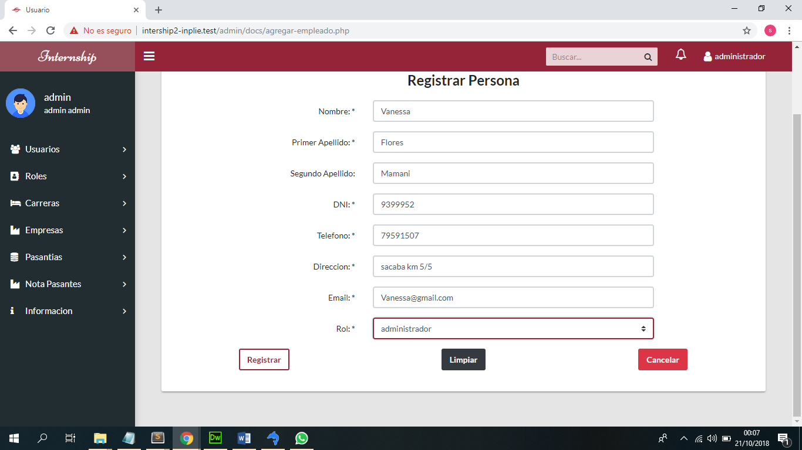
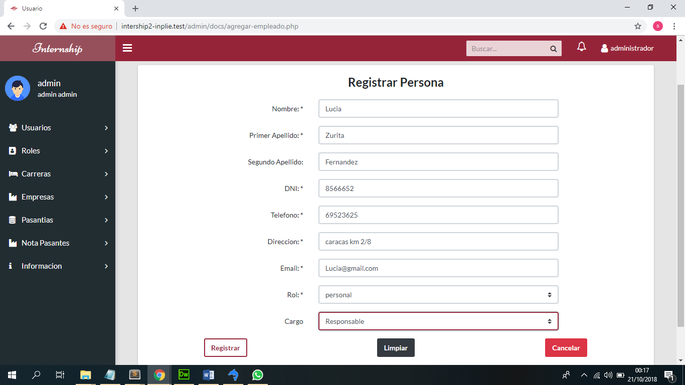
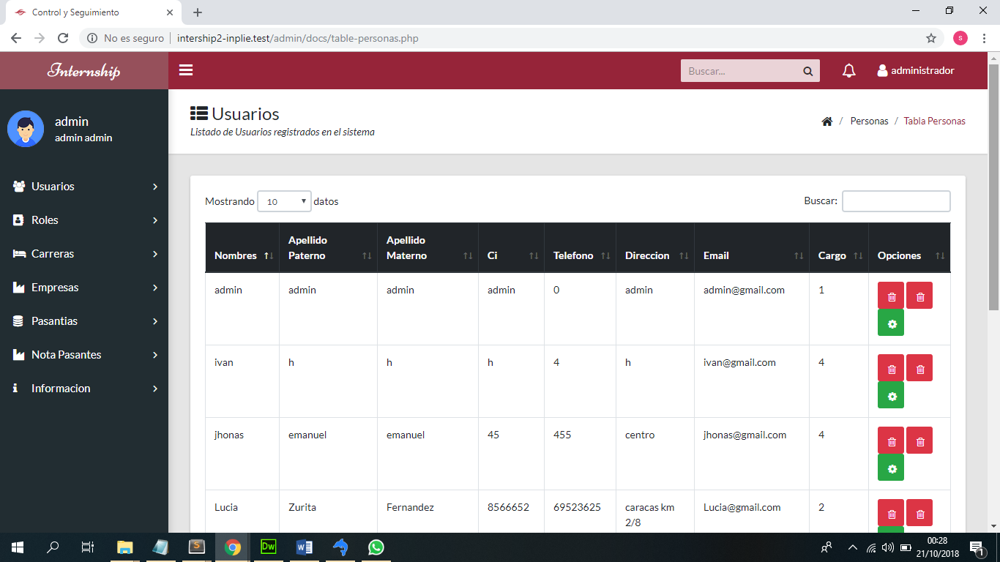

Este capítulo proporciona la operacion del Sistema mostrando cómo utilizar el Sistema de Control Y Seguimiento de Pasantias INTERNSHIP para vizualizar, crear/modificar y hacer todo lo que puede hacer el sistema.
Este capítulo asume que el Sistema está ya iniciado en su máquina con su usuario.
Este capítulo describe todo el proceso de manejar el sistema con distintos tipos de usuarios.
Registrar todos los tipos de usuario para poder ingresar al sistema.
En la siguiente imagen se ve como se puede registrar una persona que tenga el rol de un administrador.
Al registrar el personal cuando eliga en el campo de rol personal le aparecera un nuevo campo donde pueda elegir el cargo que tiene esa persona.

Despues de registrar a las personas tambien se puede listar todas las personas registradas.
Se puede modificar los datos de la persona registrada y tambien eliminarla.
There are programs that let you authenticate your users from a MySQL database and also let you write your log files into a MySQL table.
You can change the Apache logging format to be easily readable by MySQL by putting the following into the Apache configuration file:
To load a log file in that format into MySQL, you can use a statement something like this:
The named table should be created to have columns that correspond
to those that the LogFormat line writes to the
log file.